Shuffle writer: one map attempt, many reduce partitions
component index | Shuffle block resolver | MapOutputTrackerMaster
A shuffle writer runs inside the map task's executor JVM. It consumes one input partition, groups its records by destination reduce partition, and commits files that later tasks can pull. It returns a MapStatus to the task, not a stream of rows to the driver. The sort-shuffle manager does not imply that every writer sorts keys.
Flow at a glance
- Partitioner: Picks a reduce partition for each record from map partition 3.
- Shuffle writer: Commits attempt 41's output to local disk in reduce-partition order.
- Map task: Reports the serving address and block size estimates to the driver.
Key distinction: The 25 bytes for reducer 2 are together on disk. This layout groups records by partition; it does not require sorting by key.
Show the animated flow

How Spark chooses the writer
On the driver, ShuffleDependency registers with its shuffle manager and holds the resulting handle. SortShuffleManager tests the following cases in order. On the executor, getWriter(handle, mapId, context, metrics) constructs the corresponding writer for this attempt.
| Handle / executor writer |
Selection rule |
What happens to records |
BypassMergeSortShuffleHandle / BypassMergeSortShuffleWriter |
No map-side combine and number of reduce partitions at most spark.shuffle.sort.bypassMergeThreshold (default 200). |
Dispatch by partitioner.getPartition(key) to per-partition temporary writers; copy their segments into the final output in partition order. No key sort. Empty input commits zero lengths without opening all those writers. |
SerializedShuffleHandle / UnsafeShuffleWriter |
Bypass did not apply, the serializer supports relocation, no map-side combine, and at most 2^24 reduce partitions. |
Serialize each pair once into the sorter with its partition ID; sort record pointers by partition and spill as needed. One suitable spill can become the output directly; multiple spills are merged by partition. |
BaseShuffleHandle / SortShuffleWriter |
Otherwise. |
ExternalSorter buffers objects and can spill. With map-side combine it uses the dependency's aggregator, partitioner and optional key ordering. Without combine it passes no key ordering: the map only needs records grouped by partition. |
See the selection order, bypass predicate, threshold default, and serialized-mode restrictions. The three implementations differ in scratch space and CPU cost, but expose the same block and status contract.
One attempt, from records to a published location
Sequence diagram · Open full sizeText equivalent
sequenceDiagram
participant T as ShuffleMapTask
participant P as ShuffleWriteProcessor
participant M as SortShuffleManager
participant W as Selected writer
participant D as Local disk output writer and resolver
participant S as Driver scheduler
T->>P: Parent iterator, dependency, mapId 41, mapIndex 3, context
P->>M: getWriter(handle, mapId, context, metrics)
M-->>P: Task-local writer
P->>W: write(records)
W->>D: Write partition segments and commit
D-->>W: Exact lengths by reduce ID
P->>W: stop(success = true)
W-->>P: MapStatus
P-->>T: Return map task result
T-->>S: Task completion carries status, not records
ShuffleMapTask.runTask obtains the parent RDD iterator for one input partition. It passes both partitionId (the logical map index) and mapId (normally context.taskAttemptId(), or partitionId under the old fetch protocol). A replacement for map index 3 can therefore produce file ID 58 instead of 41.- The write processor obtains a writer and metrics reporter. The selected writer consumes
(key, value) pairs; the partitioner, not the input partition index, chooses a reduce ID for each record. For a DataFrame's SQL shuffle exchange, the key already holds the computed destination partition ID and a passthrough partitioner preserves it. Intermediate state belongs to this attempt: temporary partition writers, serialized pages and spills, or an object sorter.
- With default local disk storage the merged output holds each reduce partition's serialized bytes contiguously. The disk writer commits the exact length vector and optional checksums through the resolver; the single-spill writer reaches the same commit path. For shuffle 7, attempt 41, lengths
[40, 0, 25] mean reducer 2 has 25 bytes and reducer 1 has no block to fetch.
- The writer creates
MapStatus(blockManager.shuffleServerId, partitionLengths, mapId, ...). The status encoding preserves emptiness but can approximate sizes. An optional aggregate row checksum in the status compares attempts; per-block checksums on disk diagnose corrupted bytes. The scheduler registers the result under logical input slot 3. The shuffle bytes remain on the producing node, even if the advertised port belongs to its external shuffle service.
Failure and diagnosis
On a write exception the processor calls stop(false) if it obtained a writer and rethrows; it does not return a successful status for that attempt. Each implementation owns its scratch cleanup: for example, SortShuffleWriter.stop stops its sorter, and the bypass writer aborts its output on write failure. A still-needed failed map task can be requeued by TaskSetManager within its failure limit. Stopping a successful writer does not delete the committed files: reducers may not have started yet.
Diagnostic: For a slow producer, compare map-task shuffle bytes/records written and write time with memory and disk bytes spilled. Large spill with modest final output points to sorter or merge work worth investigating; a bypass writer uses temporary partition files instead. For a commit failure, start with the map attempt and its local-disk exception. A downstream reduce fetch timeout describes a different operation.